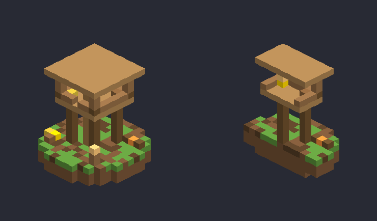
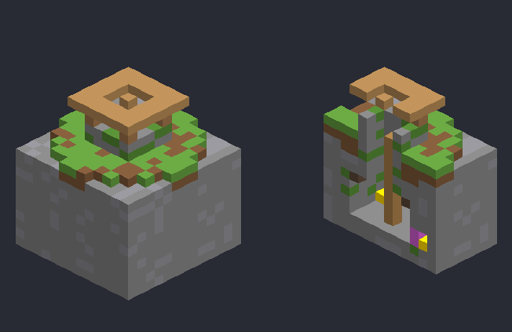
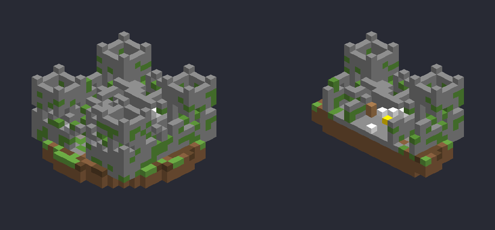
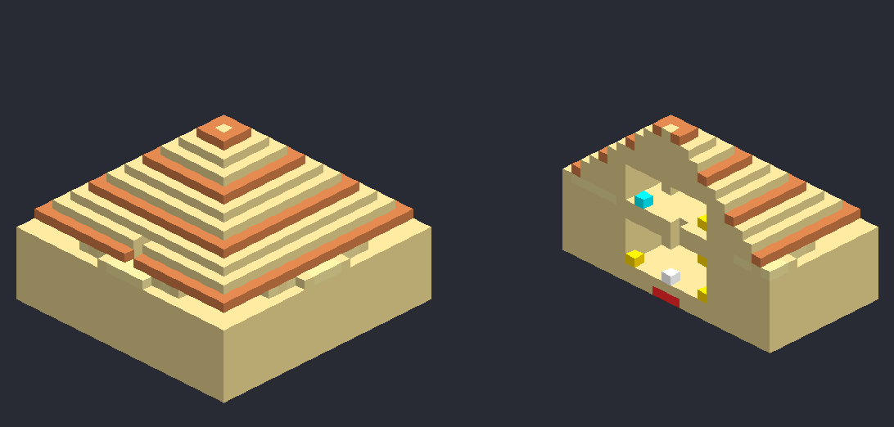
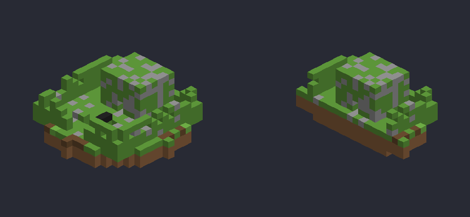
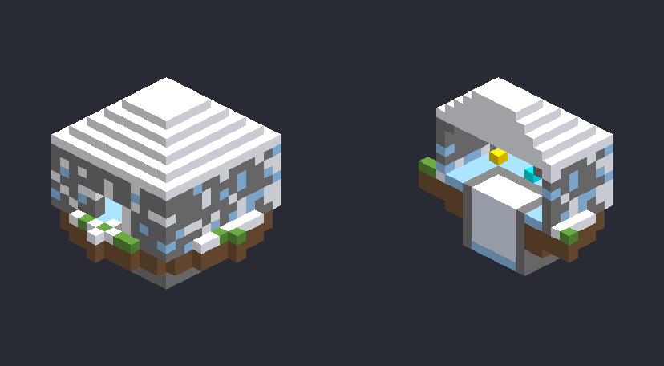
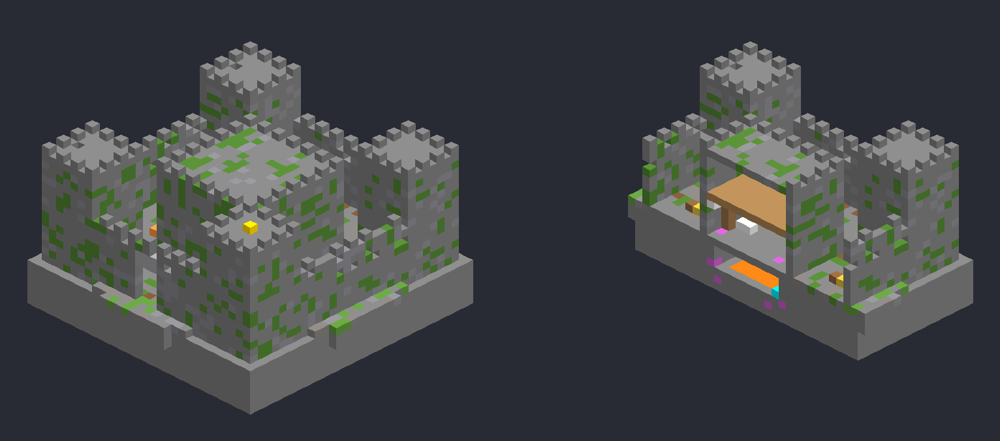
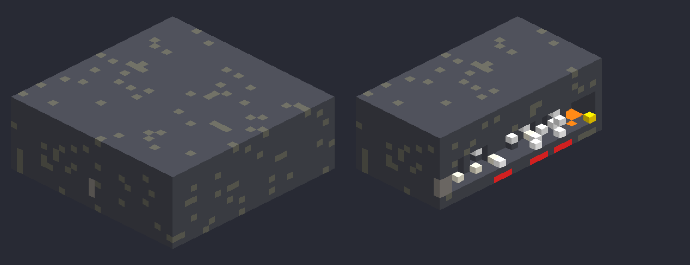
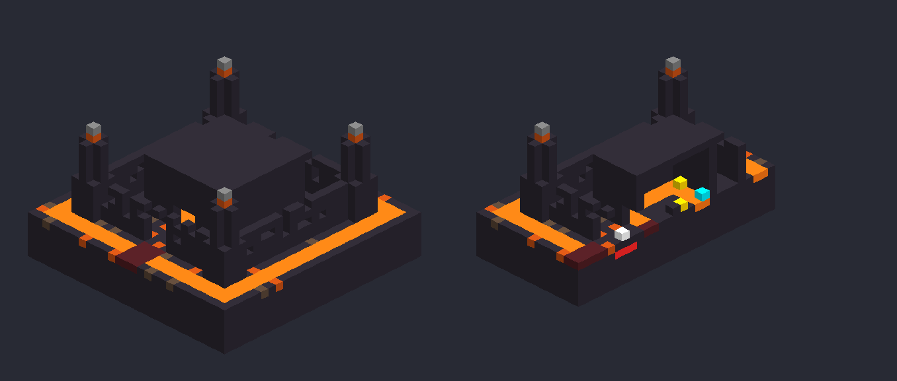
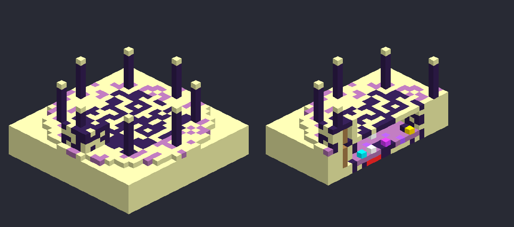

Adventure Structures v1.3
Ten loot-filled strongholds that generate on their own in new chunks - like outposts and mansions. Some are free loot, some will try to kill you. The harder the build, the better the chests.
Finding them
Every structure generates naturally during world generation - no commands, no relics needed. They only appear in chunks generated after the pack was enabled. Rarity is "one attempt per chunk with chance 1/N":
| Difficulty | Roughly how often | What to expect |
|---|---|---|
| Easy | 1 in ~140-150 chunks | Common. Free loot, no traps. |
| Medium | 1 in ~200-230 chunks | One real trap and/or a monster spawner guarding 2-5 chests. |
| Hard | 1 in ~380-420 chunks (Nether / End are denser) | Several traps, spawners, lava, hidden vaults - best loot in the pack. |
Traps & how to beat them
TNT pressure plates
A lone stone pressure plate on a floor hides TNT two blocks below. Don't step on it. Dig around it or break the plate from the side - but remember arrows, items and mobs press plates too.
Monster spawners
Cages of the pack's own monsters (Revenants, Gravewalkers, Cave Weavers...). Light the room with torches so nothing spawns, or break the spawner with a pickaxe.
Silverfish walls
Cracked, suspicious bricks next to chests are infested - mining them releases silverfish. Use Silk Touch to take them safely.
Lava vaults
Treasure sits on a dais or path beside lava. Bring a water bucket and Fire Resistance.
Spike pits & powder snow
Thorn Shrine: a pit of pointed dripstone with a one-block bridge (and wither roses on it). Frost Cairn: a powder-snow pit that swallows you - wear leather boots.
Fall-in shafts
The Dune Vault's hall has a hole that drops you into the TNT chamber. Look before you jump - land away from the plate.
Loot tiers
| Tier | Where | Contents |
|---|---|---|
| 1 | Easy structures | Bread, coal, arrows, iron, a little gold, seeds, bone meal, cooked venison, rare golden apple / saddle |
| 2 | Medium hall chests, hidden chests | More iron & gold, redstone, lapis, emeralds, an enchanted book, name tags, raw Azurite |
| 3 | Medium treasure chests | Diamonds, emeralds, enchanted books, enchanted iron/diamond gear, ender pearls, Azurite ingots, Hunter's Stew |
| 4 | Hard main chests | Lots of diamonds, enchanted diamond gear & bows, netherite scrap, Azurite, raw Pyrelite, enchanted golden apples, Totems of Undying |
| 5 | Hard vault / core chests | Netherite ingots & enchanted netherite gear, Pyrelite / Eclipsite, Totems, books, Elytra, huge XP |
Boss relics (Grave Sigil, Verdant Heart, Silk Idol, Eclipse Sigil) can appear in these chests - up to 30% in the deepest vaults - so you can skip crafting.
Easy
Bandit Lookout Plains · Savanna · Forest · Meadow · Taiga

A stilt tower on a campsite. Climb the ladder to the lantern-lit roof platform chest; a second chest sits at the camp. Traps: none. Loot: tier 1 (2 chests).
Sunken Well Plains · Savanna · Desert · Forest · Taiga · Meadow

A roofed well with a ladder to a webbed cellar (2 chests). The east wall hides a niche behind silverfish bricks with a better chest. Loot: tier 1 + one tier 2 chest.
Medium
Ruined Watch Keep Plains · Forest · Taiga · Swamp · Savanna

A crumbling walled keep with four towers. The north-west tower holds a Gravewalker spawner next to a chest. Inside the keep, a TNT plate guards the entrance hall. Loot: tier 2 (3 chests).
Dune Vault Desert · Mesa

A stepped sandstone pyramid. The upper hall has a Husk spawner, webs and a chest; a hole in its floor drops into the vault below, where four chests surround a pressure plate on nine TNT. Loot: tier 2 hall chest + four tier 3 chests.
Thorn Shrine Jungle · Swamp · Mangrove swamp

An overgrown mossy ruin. The approach crosses a spike pit on a one-block bridge lined with wither roses; the sanctum has a Cave Spider spawner and a silverfish wall behind two chests. Loot: tier 3 (2 chests).
Frost Cairn Frozen · Ice · Cold biomes

A snow-domed stone fort around a powder-snow pit. A Stray spawner sits in an ice niche between two chests. Loot: tier 3 (2 chests).
Hard
Highland Bastion Windswept hills · Mountains

A full castle: curtain wall, four climbable towers, a two-storey keep and a lava vault under the hall.
- Spawners: Revenants (two towers and the keep's upper floor), a Gravewalker tower, a Cave Weaver in the cellar.
- Traps: two TNT plates in the keep vestibule, a TNT plate in the vault corridor, a lava lake beside the vault path, silverfish walls.
- Loot: 4 tower chests (tier 3), 4 keep chests (tier 4) and the vault chest (tier 5).
Sunken Crypt Underground, anywhere in the Overworld

A deepslate hall with four side chambers and a lava-moated treasure dais at the north end.
- Spawners: Cave Weaver, Revenant and Gravewalker chambers.
- Traps: three TNT plates down the hall, a lava moat with a one-wide bridge, webs, an infested wall hiding an extra chest.
- Loot: four chamber chests + a hidden chest (tier 4) and the dais vault (tier 5).
Pyre Bastion The Nether

A blackstone fortress ringed by a lava moat with a nether-brick bridge. Inside the keep the core chest sits on an island in a lava ring.
- Spawners: two Ashen Wargs and a Wither Skeleton.
- Traps: a nine-TNT plate between the gate and the keep, lava everywhere.
- Loot: two Nether chests + the core chest (gold, ancient debris, Pyrelite, netherite scrap, Totems, enchanted gear).
Eclipse Vault The End

An obsidian-pillared platform hiding a vault under the ground, entered by a ladder shaft. An Eclipse Altar stands in the middle - bring a sigil.
- Spawners: two Voidweavers and an Endermite spawner.
- Traps: three TNT plates around the approach and altar.
- Loot: two chests + the core chest: Eclipsite, netherite, Elytra, Totems, shulker shells, enchanted gear, a 30% chance of an Eclipse Sigil.
Story site
Hanae's Shrine generates only in Cherry Groves (about 1 in 45 chunks there): a torii gate, a stone path, a cherry-wood pavilion over the Blossom Altar, a pond and old blossom trees, with a small loot chest. It is the ritual site for the Chapter I boss - see The Veiled Blossom.